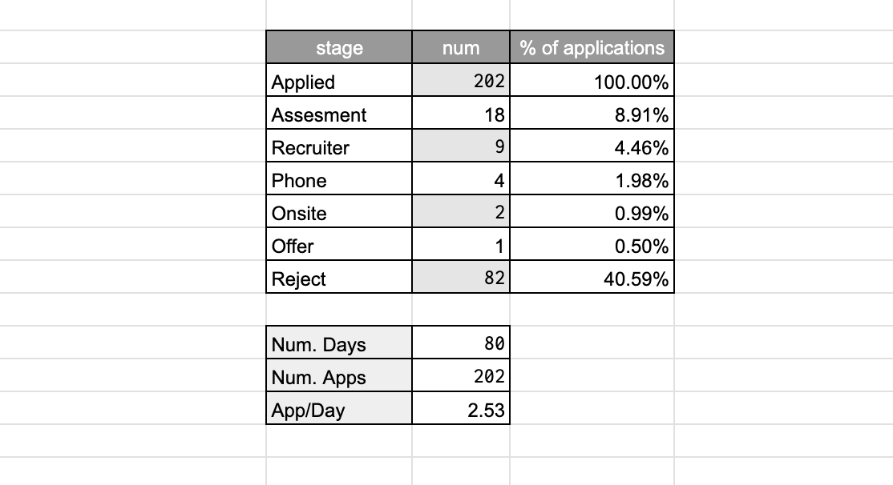
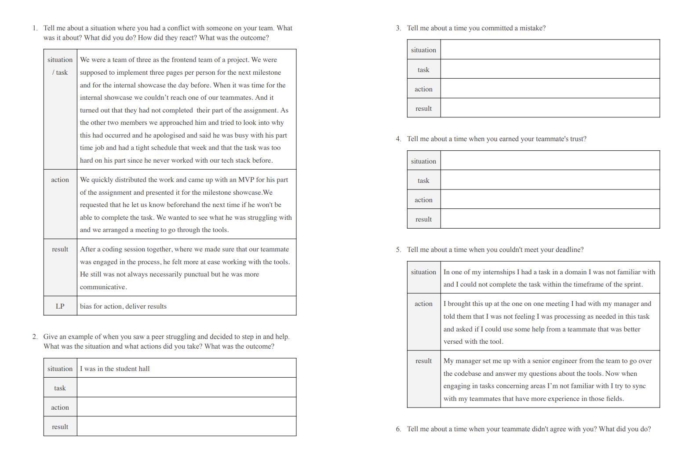

How to land a Software Engineering job in the UK
I have been working as a Software Engineer at Amazon Prime Video in London since May 2022. Job search in the UK as a Turkish citizen can be a quite difficult process, and not many people have visibility into how it works. This document aims to provide context and help to get you started from someone who has been through the process.
- How to land a Software Engineering job in the UK
1. Glossary
- Visa Sponsorship: Visa sponsorship is a process where a company in the UK, offers to support a foreign national in obtaining the necessary visa or work permit to legally work there. Visa sponsorship is crucial for individuals who are not citizens or permanent residents of the UK but wish to work there. The sponsoring company typically helps with the visa application, including providing documentation and support, to facilitate the legal employment of the foreign worker. They might also assign you an immigration assistant from an external company throughout the process.
- Rolling Admission: Rolling admission or rolling application process, is a hiring strategy used by some companies. Companies continuously accept and review job applications throughout the year, as opposed to following a strict deadline for application submission. This means that job seekers can apply for positions at any time, and companies review and fill positions as qualified candidates are identified. It allows companies to have a more flexible hiring timeline, and candidates may have a better chance of being considered if they apply early in the process.
2. Finding a job opening
Recently, the job market hasn't really been the best. Finding job openings can be tiresome and locating job offers that do offer visa sponsorship is not easy as companies do not always include this in their job listings. Let me list what I tried and what I ended up doing.
Before diving into the techniques to find openings, I want to mention that a lot of companies do rolling admission. So timing is critical. The earlier you climb the processes of a companies hiring steps the likelier you are to be hired.
So make sure to apply as early as you can, have your applications formation readily available on your mobile devices so you can apply on the go.
2.1 Linkedin
Searches and Recommended
Every 2-3 days I would go on LinkedIn to check positions in the UK that may be recommended to me by the LinkedIn algorithm.
Alerts
Additionally I had email alerts active. If you directly create an alert, the LinkedIn UI gives you a not very fine-grained set of choices for your alerts. Instead what you can do is creating alerts for specific searches. I had alarms set up for a bunch of searches for a while before landing my position.
Let's go through search fields one by one:
- 🟢 Text Query: This is the query you search for initially when you begin your LinkedIn search. I had alerts with the query field set to
Software,Data Scientist,Machine Learning. This field will depend on your specialisation but it is always wise to have one withSoftwareto cover most bases. - 🟢 Date Posted: Best to keep this in line with your alert's period. i.e. if you have daily alarms, include last 24 hours.
- 🟢 Location: This is a safe field an mostly used well by companies. My searches were almost all confined to United Kingdom. You can have a set of cities, or countries, or economic zones (i.e. European Union).
- 🔴 Experience Level: This is an unsafe field for LinkedIn searches as it is often not respected by companies putting out these job adverts. If you filter to say,
Entry Level, there is a high probability that you will miss on a lot of opportunities so I suggest not using this field. - 🟠Company: This is a field I used for defining different sets of alerts. I had a 24h period alert spanning FAANG-adjacent companies (Facebook, Apple, Amazon, Netflix, Google and the likes of Twitter, JPMorgan, Bloomberg, Yelp, SkyScanner etc.) and a weekly alarm with an unset company field so I could track all openings.
- 🔴 On-site/Remote: I suggest not using this field as it also tends to be subject to erroneous use.
- 🔴 Easy Apply: I marked easy apply as a red field because I haven't really had anyone contact me from the Easy Apply applications I have made. If you do see an Easy Apply opening, I suggest checking out the company's Hiring page on their official website. Only use Easy Apply if they don't have any opening adverts they are hosting themselves.
- 🔴 Industry: I don't suggest filtering based on this field as companies in different industries may offer well-paid and well-established SWE positions. Say the likes of Bloomberg. You may wish to use this if you're targeting specific high-salary industries like Finance.
- 🔴 Job title: I don't suggest filtering based on this field if your alert is not confined. to tech industry companies.
- 🔴 Salary: Again a not well-respected field by hiring managers and is also frequently left blank so do not use this if you don't want to miss out on opportunities.
Profile
Goes without saying that you should keep your profile up-to-date. Make sure to add descriptions to your previous and current positions to rank higher in keywords for recruiters. Recruiter mail may feel like spam, but they are people who are trying to get a paycheck by getting someone hired, so follow them and get in touch if you see a potential opening.
2.2 Company websites
You must subscribe to job opening alerts by your target companies that are hiring at high volumes. This covers any big tech.
Some examples:
Most companies do have mailing lists you can subscribe to, make sure to do so to not miss out.
2.3 How to find companies that offer visa sponsorship
Not all companies offer visa sponsorship. And not all companies that do have the ability to offer visa sponsorship do so in all their positions.
What I have done for applying to non-big-tech companies was using the following website to track visa sponsors:

Link: UK Tier Sponsors
This is a comprehensive list of companies that ar eligible to offer visa sponsorship.
I used this website in two ways:
-
Checking if companies I am applying through LinkedIn adverts are registered here.
-
Going through literally all entries in this web app and opening their websites in new tabs, one page at a time. Then I would go through all websites to see if there are any openings, apply if yes, look for open positions in LinkedIn if not, and would apply to everything I could find.
P.S. if you're going for the 2nd option, filtering by industry might help reduce your wasted time.
Apparently they have also added a saved list, slack community, and an option to export the list, and most recent additions to the list which could be useful (mental note to myself for hooking this data up to a mailing list) and did not exist at my time using the app.
2.4 Sharing is caring
It's good to have alerts and such, but it's even better when the adverts pass through a human filter. If you're a collaborative soul, find or form instant messaging groups, message boards where people share open positions in their company.
2.5 Before you apply
Referrals
Before you apply to a company's opening check in with your contacts. If you know someone from that company that you worked together with, or, took part in activities relating to software development with, reach out to them before you apply to the position.
Most companies provide a referral program, where their employees can vouch for people they have experience working with. The person you reach out to can send you a referral link through which you can apply to the position of your choice. This will place you higher in the queue of people to be interviewed and potentially help you get hired.
It is important to keep in mind that most companies don't let you add a reference to your application after you sibmit it. So make sure you get your referral before you apply.
3. Steps of the hiring process
The hiring process usually has the following steps (steps 2 & 3 may occasionally be swapped):
- Online Assessment (OA)
- Phone-Screen Interview
- Recruiter Call
- On-site Interview
3.1 Online Assessment
Usually the first step of the interviewing process, the OA usually comprises of two coding questions that you can solve at an allocated 45-60 minutes of your choosing.
One should keep in mind that unfortunately, having a 100/100 score on these questions won't guarantee that you will advance to the next step.
3.2 Phone-Screen Interview
In this step you solve your questions by demonstrating your thought process to an engineer, walking them through the process.
Reaching this step means you are officially going through the interview process. You have passed a CV-review and have demonstrated skill in solving coding problems.
This is the first step you meet with an engineer from the company, and get to ask questions. Depending on the company you may get asked behaviorals questions. In which case refer to the STAR method.
3.3 Recruiter Call
You get a call from the recruiter, where they walk you through next steps. You may sometimes be asked small questions based on your skills for them to delegate you to one of the open positions with the title you've applied for.
3.4 On-site Interview
On-site interviews are traditionally done by inviting over the candidate to the office of the position. The candidate's accommodation and travel is reimbursed. There, they go through 3 to 5 interviews back to back. These are usually 45 minute phone screen style interviews with 15 minutes of breaks inbetween (or 55-5). I heard they make you write code on a whiteboard! Personally, I went through online on-sites as I was applying through Covid.
3.5 Additional notes
This process can slightly change depending on the company you are interviewing with. For example Palantir has a contractor firm that does their phone interviews for them. So you won't be meeting a Palantir engineer during your phone interview.
Another thing Palantir does differently is that the onsite is not the final step. There, you also go through a manager call (which I didn't progress to). Where the hiring manager decides if you're a good fit for them.
4. My Experience with the hiring process
Whilst I was going through the interviewing process, I wanted to keep track of everything and keep some statistics on how it was going. For this, I started keeping an excel sheet. I kept the company name, position, level, application date, location, interview steps and a little progress bar for some pizazz.

I also keep notes to track what went well and what could be improved. Getting back to this info later and addressing improvement opportunities is extremely useful.
If you need a little estimate of what it took for me to land my job offer; I applied for 202 separate positions in 80 days. You can see a small summary of how my job hunt went in the numbers below.

5. My experience getting hired by Amazon
Interestingly, out of the 202 positions I have applied to, the position I went forward with and received an offer from was through my first ever application.
I had applied to Amazon and interviewed with them 2 years prior for an internship role. My experience was very positive, but as it goes, I was underprepared and failed the phone screen interview.
Then as I was looking for a job 2 years later, Amazon was the first company I applied to. I had applied for a non-student position. I managed to progress through the OA, the phone screen interview and the recruiter call so they had me pick a date for the onsite interview. When nobody was confirming the date I picked T minus 2 days, I reached out to everyone I could to find out that the position I had applied for was already filled, and the opening was to be closed.
Disheartened, I explained that as a senior year student I was able to pass through this interview process and that I believed this shows potential and skill. I explained that I would like my process to be counted towards a graduate role. I pushed for this and tried to add grease to the communication between recruiters and hiring managers by asking for updates as least intrusively as I could but still frequently.
I was given the green light and was told to wait for a certain recruiter to reach out. A month later when student programs started receiving applications, I had my onsite interview over Amazon Chime and received an offer within 5 days.
I guess my lesson learned from this would be to not be afraid to inquire about additional opportunities even if you do get rejected. Asking can't hurt.

The Amazon onsite is three back-to-back interviews for grad roles and 5 back-to-back interviews for non-grad roles. Every interviewer asks one behavioral question followed by a coding question or two.
I can confidently say that Amazon's onsite was the onsite I found the most meaningful, due to the nature of the questions and how different they felt, from industry-standard leetcode questions. These were real business problems simplified into a 1-hour-ish problem, that didn't feel like neither an Introduction to Algorithms exam or a how-many-windows question.
After I joined the company I went through the hiring training as early as I could. When Amazon starts hiring, I will get to be on the other side of this process welcoming candidates and trying to give them their best interviewing experience :)
6. How to prepare for coding questions?
Not going to lie, coding questions aren't easy. There are some things you can do to get better at it.
6.1 Read some Cracking the Coding Interview
Might be a little bit old school, but I definitely suggest you start by reading Cracking the Coding Interview which I read in a nice little motel down in Şile before an interview. This should give you more than just how to solve questions. It gives very good pointers about how to create a good CV and a lot of other points as well.
I would suggest reading it selectively, skipping stuff you already know about.
6.2 Solving LeetCode problems
Go to LeetCode and create an account if you haven't done so.
I am not one to give advice on this part probably, because my methodology was extremely painful. I would try to solve 2 questions a day, without consulting outside sources. It would take me between 20 minutes to 2 hours to solve one question. So. I spent 40 minutes to several hours every day.
Instead what I should have done was applying my battle-tested study technique that I used when preparing for national placement exams, adapted to this new domain.
The technique
Solve three questions a day. Do not spend more than 10 minutes without progress. If you can't progress, read solutions until you understand one fully and save the link to the question into a document with a date (call this the unsolved doc).
Next week, every day pick up one to three (depending on how long your list is) questions to solve from your unsolved doc. The ones you can solve, put them into a new document (call this the solved doc).
If you can't solve a question in your unsolved doc, add the number 1 next to the question. Read solutions, rinse & repeat.
If you are getting high numbers next to some questions, watch videos on them, re-implement solutions by reading, whatever helps it to stick.
Every now and then, may be every month, go through your solved list. Try to see the solution to every question in your mind. If you can't, solve it again. If you can't, add it back to your unsolved list.
This ensures indefinite repetition of questions you can't solve and exerts less focus on the ones you can.
6.3 Finding company-specific questions
Leetcode has question sets curated for interviewing at certain companies. However these lists are behind a paywall. I cam across lots of people who recommended I paid for a subscription to access these lists. You may want to do that if you have a bunch of money lying around. I chose to go a different way.
Enter Lintcode Collections

LintCode is basically a Chinese LeetCode clone. You don't need to create an account although it helps get rid of annoying prompts.
LintCode collections have separate collections of questions in the style of specific companies. I used LintCode collections when interviewing with Twitter and Facebook. If you know a bit of Mandarin you can go a long way on LintCode. If not, you can use any translation extension to explore questions.
Mind you, these are not special questions you can't find anywhere, but questions lists curated for companies. If you want to better keep track of your progress, you can look through the lists, then find and solve the question on LeetCode. That is what I did, primarily because at the time LintCode did not support community solutions, whereas LeetCode did.
7. How to prepare for behavioral questions?
Behavioral questions are questions where the interviewer asks the interviewee questions regarding how they behaved in certain scenarios in the workplace. If you're a student and have no work experience, you can resort to finding examples from group projects.
7.1 The STAR method
On how to answer these questions: just go ahead and search for the STAR method. This is the industry standard for answering behavioral questions. In a nutshell you can use STAR to tell a story by laying out the Situation, Task, Action, and Result.
- Situation: Set the scene and give the necessary details of your example.
- Task: Describe what your responsibility was in that situation.
- Action: Explain exactly what steps you took to address it.
- Result: Share what outcomes your actions achieved.
It is best not to try and form these stories on the whim. It really does take a few interviews to get how to do this right.
7.2 Leadership principles
I really do suggest going and having a read on Amazon's LPs. They are good tenets on which you can build your work ethics. LPs are actually applicable industry-wide and it is good to have stories matching Amazon's LPs even if you're interviewing somewhere else.
The 16 current leadership principles are in no particular order:
- Customer Obsession
- Ownership
- Invent and Simplify
- Are Right, A Lot
- Learn and Be Curious
- Hire and Develop the Best
- Insist on the Highest Standards
- Think Big
- Bias for Action
- Frugality
- Earn Trust
- Dive Deep
- Have Backbone; Disagree and Commit
- Deliver Results
- Strive to be Earth’s Best Employer
- Success and Scale Bring Broad Responsibility
I suggest going and having a read of Amazon's Leadership Principles in greater detail.
7.3 How to prepare your answers
During my interviewing process, I curated a list of behavioral questions from a bunch of companies. I added stories from my experience in the STAR method to some key questions. For others, a story from another question could be reused. I left these blank. I matched these question-story pairs with related Leadership Principles (LPs). See below some example pages from the document I kept;

I had also created a small tool to practice interview questions. This tool has a default set of questions that it displays on the screen. You have 30 seconds to think about each question, and 90 seconds to recite your answer. The tool takes no input, only provides you questions and a timer.

Here's a link to the rather 00s looking tool: Behavioral Interview Practice
8. How to get better at interviewing
A tourist asked a New Yorker how do you get to Carnegie Hall. And the answer was: Practice! Practice! Practice!
It goes without saying that you should practice the whole interviewing process. For this you should get interviewed. As you go through interviews at companies, you will get more practice. You should take notes after every interview on what went well and what could be improved.
However, you might not get a lot of interviews and not want to spend first few interviews making errors, or, you might want to get mock interviews.
Mock interviews
In my case, as I applied to a whole lot of companies I got to interview at a lot of places. In the meantime, me and my friends who were also looking for a job (and ones who did find oen) at the time had a WhatsApp group. Prior to interviews or interview seasons we would write and ask if someone could mock-interview us.
Other people would join in to shadow as well. So you would be interviewing with a friend or acquaintance, in English, with a bunch of others watching. It closely replicates the Stage fright aspect of the interviewing process. Which helps calm you down in consecutive interviews.
If you don't have (such) friends, you can check out peer mock interview services. These are web apps that match two people who want to practice the two sides of the interviewing process. Examples TBA.
9. Conclusion
This sums up the tools and techniques I have used to secure a Software Engineering position in the UK as a Turkish citizen. This is not meant to be a definitive guide, but offers perspective from someone who has been through the process in a rather short time. I hope having read this, you have learned a thing or two you did not know about or gained a realistic perspective on what it takes to conclude a job hunt.
Mind you, this document has no mention of the Global Talent or Global Promise visa schemes, which completely remove the need for finding a company that can sponsor your visa. I have friends going through this process. I am trying to get them to write up a small document describing that process as well. If I succeed, I'll add a link to their post here.
If you would like to ask any follow-up questions, reach out to me using my contact page.